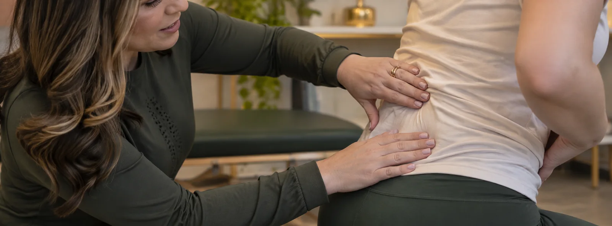

Fisioterapia para dor crônica
Dor que dura meses raramente melhora com tratamento pontual. Entendemos o que mantém a dor para ajudar você a se mover com mais confiança.
aliviar para começar
Agendar avaliaçãoas técnicas manuais ajudam a diminuir o desconforto e preparam o corpo para os exercícios.